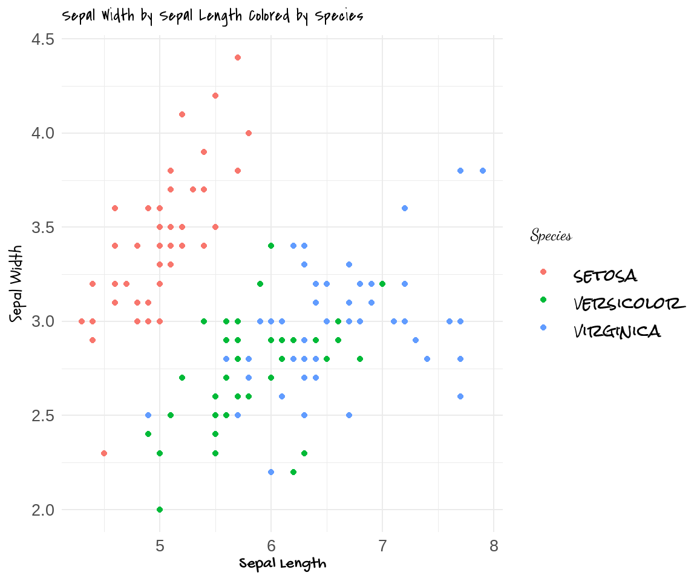
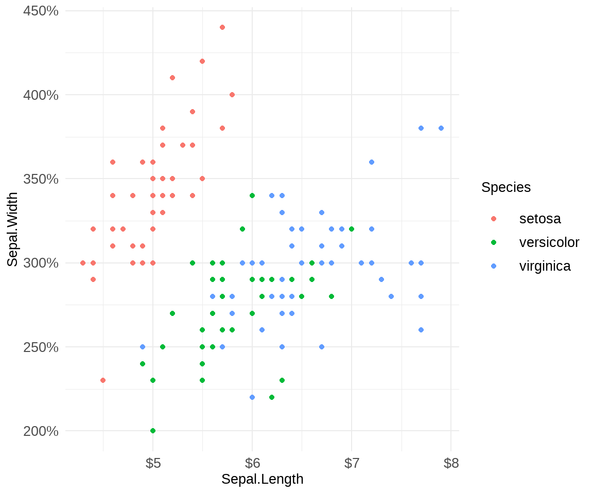

Hello again! I’m excited to put another post up on Dialectic with Data where I will be brain dumping some of the awesome R resources I have ran across in my journey learning and loving R! This post is was specifically inspired by my practicum team because I have enjoyed sharing these resources with them over time, but many of them have been lost deep in the depths of our slack channel. So, I am going to be cataloging many of the things that I have shared with them, and I will also be adding new resources as I come upon them for them and you!
1 General R tips
1.1 R for Data Science
My biggest and most valuable tip to learning R is read R for Data Science by Hadley Wickham and Garret Grolemund.This book has so much knowledge stored inside it. It primarily teaches the tidyverse and its wonderful array of tools for exploratory data analysis and data visualization. It has been a bible for me, and I see myself turning back to it more often than one would think for a self-classified introductory book. The second version is currently under development but available to read here.
1.2 Rstudio Projects
Rstudio projects are a convenient and efficient way of organizing all of the code, data, and visualizations that make up a data science project. The biggest efficiency boost in my experience is that your working directory automatically updates to the folder where your Rstudio project lives, so all of you code and visualizations are automatically saved in the same place. Additionally, any data that you have in, for example, a csv file can be easily uploaded to your environment without having to mess with the working directory. Other important features that are a bit more advanced revolve around Rstudio projects ability to improve reproducibility and use version control.
- Resources for learning more about Rstudio Projects
1.3 Shortcuts, Tips, and Tricks
The Rstudio IDE is probably the best IDE (integrated development environment) for using R and conducting data science tasks in general. It has stiff competition from the likes of Visual Studio Code, but there are a few tips and tricks that I am going to show you for Rstudio that might make you think twice before switching to a different IDE.
-
Alt + -- Shortcut for inserting the assignment operator
<-
- Shortcut for inserting the assignment operator
-
Ctrl + Shift + M -
Ctrl + Shift + R- Creates a comment section header in an R source file which is collapsible and also creates an outline to easily navigate your code file.
-
Ctrl + Shift + Alt + M- Renames a variable in the entire file. Just highlight the variable to be renamed, use the shortcut, and type the new name. Easy as that!
- Using
Ctrl + Fand using replace is another option which is useful when you don’t want to rename every instance of a variable in the file.
- Code Snippets
- Code Snippets are ways to insert commonly used code structures (or headers) in an R file. Under the Tools toolbar, go to Edit Code Snippets. There you will see all the code snippets pre-built in Rstudio and and editor for adding new ones. I use this to add a header structure to new scripts where I can fill in information about the script for my teammates to read when they use it.
- Multiple Cursors
- This was a tip that I was sorely missing from my time using VS Code until I stumbled upon this simple shortcut in Rstudio! Just by holding down the
Altbutton and clicking or draging with the mouse, you’ll have more cursors than you know what to do with. More awesome shortcuts can be found in this awesome article by Appsilon
- This was a tip that I was sorely missing from my time using VS Code until I stumbled upon this simple shortcut in Rstudio! Just by holding down the
1.4 Quarto
Quarto is Rstudio’s (now called Posit) new Rmarkdown replacement. The biggest change from Rmarkdown to Quarto is that you can use Quarto in Jupyter Notebooks! Posit (formerly Rstudio) is broadening it’s presence in the data science community by engaging with python users in addition to R users. The hope, says Posit, is to create easy tools for cross-language collaboration so that researchers and data scientists who have different languages of choice can work together with ease. From what I have seen, many data scientists who might have preferred R as a language have been pressured to use python because of its large presence in the data science community. This tool is hopefully going to create a pathway for R users to stay R users without complicating team workflows in a python-dominant environment. In addition, Quarto has some awesome features such as helping users easily create documents, presentation, or even blogs (like this one!). So far, it has been very intuitive and the documentation has been very helpful. You can find information at quarto.org.
2 Packages
Now lets get to packages! I am going to be listing packages that I think are really helpful (and really cool) for working with data and doing modeling in R.
2.1 Tidyverse
-
ggplot2
- This package contains the best tools for taking data and making a stellar visualization out of it. It is extremely versatile and at times very complicated. Later on I will be sharing more about ggplot2 and provide some resources for making ggplot2 super easy to understand.
-
dplyr
- This package has the tools you need to manipulate data. Mutate is useful for feature engineering and summarise is great for calculating summaries of your data set. Using the piping syntax makes this package so powerful. My favorite way of using this package is to dig into the data and pipe what I want into a ggplot!
-
readr
- This package makes importing data easy as can be.
-
purrr
- This package contains the tidyverse’s toolkit for functional programming. The iteration chapter in R for Data Science is a great place to start if you are new to functional programming. Another great resources I used is purrr tutorial by Jenny Bryan. Functional programming has been very hard for me to learn, but these two resources have really helped me wrap my brain around the concept, and it has already impacted my projects enormously.
-
stringr
- stringr is the handiest way of working with strings in R. It has everything under the sun when it comes to manipulating and cleaning character data.
-
forcats
- Factors are a very common data type in R, but they can be tricky at times. This package has some awesome tools for working with factors that will really come in handy if you use factors a lot.
2.2 Tidymodels
Tidymodels is a standalone universe which has everything you need to do machine learning in R. The tidymodels project is headed by the same person that create CARET years back, Max Kuhn, and the goal of tidymodels is the same as CARETS goal: To create a unified interface for machine learning in R. The package makes use of R’s rich ecosystem of machine learning model packages but standardizes the interface across all those implementations to make the switch between models seamless. The amount of packages and tools in the tidymodels universe is large and there is too much to say for this blog post. However, I do plan on showing how tidymodels is used in a future blog post, so stay tuned! In the meantime, I am going to point you to some amazing resources if you want to get started now. - Tidy Modeling with R is a free book written by Max Kuhn and Julia Silge which is the best resource for getting started with tidymodels and it also has some great information on machine learning in general! - tidymodels.org has some amazing content which will be the preferred resource for people who want a shorter format introduction to tidymodels. - juilasilge.com is the blog of one of the co-authors of Tidy Modeling with R and she has some great blog posts and youtube videos where she implements the tidymodels packages and gives great explanations of what she is doing.
2.3 Awesome Packages
The Awesome Packages section is going to be a growing list of packages that I find really cool because they have either changed and/or improved the way I use R as a data science student.
2.3.1 broom
broom is a super cool R package. One of the most annoying aspects of using R for data science is trying to extract the output from the model object. Summaries of the model object are easy enough to get using summary(), but to extract the components of model like the coefficients, pvalues, or Rsquared value to use for other operations means digging into the model object and trying and failing to use the right index to find it. broom makes that task no more. By using the tidy() function on supported model objects, the output is represented as a data frame which makes extracting what you want so much easier. Rsquared and other metric vaules can be found by using glance() and augment() can add output like predictions from a new dataset back into the data set from whence it came.
summary(mpg_lm) # Normal summary output
Call:
lm(formula = mpg ~ wt + hp + cyl, data = mtcars)
Residuals:
Min 1Q Median 3Q Max
-3.9290 -1.5598 -0.5311 1.1850 5.8986
Coefficients:
Estimate Std. Error t value Pr(>|t|)
(Intercept) 38.75179 1.78686 21.687 < 2e-16 ***
wt -3.16697 0.74058 -4.276 0.000199 ***
hp -0.01804 0.01188 -1.519 0.140015
cyl -0.94162 0.55092 -1.709 0.098480 .
---
Signif. codes: 0 '***' 0.001 '**' 0.01 '*' 0.05 '.' 0.1 ' ' 1
Residual standard error: 2.512 on 28 degrees of freedom
Multiple R-squared: 0.8431, Adjusted R-squared: 0.8263
F-statistic: 50.17 on 3 and 28 DF, p-value: 2.184e-11tidy(mpg_lm) # tidy() returns coefficients and pvalues# A tibble: 4 × 5
term estimate std.error statistic p.value
<chr> <dbl> <dbl> <dbl> <dbl>
1 (Intercept) 38.8 1.79 21.7 4.80e-19
2 wt -3.17 0.741 -4.28 1.99e- 4
3 hp -0.0180 0.0119 -1.52 1.40e- 1
4 cyl -0.942 0.551 -1.71 9.85e- 2glance(mpg_lm) # glance returns model metrics# A tibble: 1 × 12
r.squared adj.r.squa…¹ sigma stati…² p.value df logLik AIC BIC devia…³
<dbl> <dbl> <dbl> <dbl> <dbl> <dbl> <dbl> <dbl> <dbl> <dbl>
1 0.843 0.826 2.51 50.2 2.18e-11 3 -72.7 155. 163. 177.
# … with 2 more variables: df.residual <int>, nobs <int>, and abbreviated
# variable names ¹adj.r.squared, ²statistic, ³deviance# augment with 'newdata = ' returns entire dataset plus fitted and residual values
augment(mpg_lm, newdata = mtcars)# A tibble: 32 × 14
.rownames mpg cyl disp hp drat wt qsec vs am gear carb
<chr> <dbl> <dbl> <dbl> <dbl> <dbl> <dbl> <dbl> <dbl> <dbl> <dbl> <dbl>
1 Mazda RX4 21 6 160 110 3.9 2.62 16.5 0 1 4 4
2 Mazda RX4 … 21 6 160 110 3.9 2.88 17.0 0 1 4 4
3 Datsun 710 22.8 4 108 93 3.85 2.32 18.6 1 1 4 1
4 Hornet 4 D… 21.4 6 258 110 3.08 3.22 19.4 1 0 3 1
5 Hornet Spo… 18.7 8 360 175 3.15 3.44 17.0 0 0 3 2
6 Valiant 18.1 6 225 105 2.76 3.46 20.2 1 0 3 1
7 Duster 360 14.3 8 360 245 3.21 3.57 15.8 0 0 3 4
8 Merc 240D 24.4 4 147. 62 3.69 3.19 20 1 0 4 2
9 Merc 230 22.8 4 141. 95 3.92 3.15 22.9 1 0 4 2
10 Merc 280 19.2 6 168. 123 3.92 3.44 18.3 1 0 4 4
# … with 22 more rows, and 2 more variables: .fitted <dbl>, .resid <dbl># augment without newdata uses training data and returns more metrics
augment(mpg_lm)# A tibble: 32 × 11
.rowna…¹ mpg wt hp cyl .fitted .resid .hat .sigma .cooksd .std.…²
<chr> <dbl> <dbl> <dbl> <dbl> <dbl> <dbl> <dbl> <dbl> <dbl> <dbl>
1 Mazda R… 21 2.62 110 6 22.8 -1.82 0.0750 2.53 1.15e-2 -0.754
2 Mazda R… 21 2.88 110 6 22.0 -1.01 0.0582 2.55 2.67e-3 -0.416
3 Datsun … 22.8 2.32 93 4 26.0 -3.16 0.0856 2.48 4.05e-2 -1.32
4 Hornet … 21.4 3.22 110 6 20.9 0.464 0.0533 2.56 5.08e-4 0.190
5 Hornet … 18.7 3.44 175 8 17.2 1.53 0.110 2.54 1.29e-2 0.647
6 Valiant 18.1 3.46 105 6 20.3 -2.15 0.0699 2.52 1.48e-2 -0.888
7 Duster … 14.3 3.57 245 8 15.5 -1.19 0.118 2.55 8.53e-3 -0.506
8 Merc 24… 24.4 3.19 62 4 23.8 0.636 0.157 2.55 3.55e-3 0.276
9 Merc 230 22.8 3.15 95 4 23.3 -0.496 0.152 2.56 2.06e-3 -0.214
10 Merc 280 19.2 3.44 123 6 20.0 -0.789 0.0469 2.55 1.27e-3 -0.322
# … with 22 more rows, and abbreviated variable names ¹.rownames, ².std.resid2.3.2 janitor
janitor is a key package because it does something that, while we might think is important, is not all that interesting, but is a such a quality of life boost for a data scientist. Cleaning dirty data is numerous ways. Cleaning dirty data is a necessary part of the process to extracting value out a data set, but it is such a time sink. Janitor comes in to provide a myriad of helpful functions to get data people working in the data instead of on the data.
library(janitor)
# Data frame with bad column names
test <- tribble(
~`Customer ID`, ~RegionCode, ~ElePhanTIntHeRoOm,
242, "A", 24,
3422, "B", 353
)
test# A tibble: 2 × 3
`Customer ID` RegionCode ElePhanTIntHeRoOm
<dbl> <chr> <dbl>
1 242 A 24
2 3422 B 353# clean_names() takes care of most bad column names in most forms
# Not always going to work but its great for 99% of the data files you'll encounter
janitor::clean_names(test)# A tibble: 2 × 3
customer_id region_code ele_phan_t_int_he_ro_om
<dbl> <chr> <dbl>
1 242 A 24
2 3422 B 3532.3.3 skimr
skimr is your best friend when beginning exploratory data analysis. Using the skim() function on a data frame, a really easy to understand output will be generated containing summary statistics for all of your columns. The information will include variable type, percent missing, 0th, 25th, 50th, 75th, 100th percentile value for continuous variables, mean, standard deviation, and more! I think that you will love this tool once you start to use it!
| Name | mtcars |
| Number of rows | 32 |
| Number of columns | 11 |
| _______________________ | |
| Column type frequency: | |
| numeric | 11 |
| ________________________ | |
| Group variables | None |
Variable type: numeric
| skim_variable | n_missing | complete_rate | mean | sd | p0 | p25 | p50 | p75 | p100 | hist |
|---|---|---|---|---|---|---|---|---|---|---|
| mpg | 0 | 1 | 20.09 | 6.03 | 10.40 | 15.43 | 19.20 | 22.80 | 33.90 | ▃▇▅▁▂ |
| cyl | 0 | 1 | 6.19 | 1.79 | 4.00 | 4.00 | 6.00 | 8.00 | 8.00 | ▆▁▃▁▇ |
| disp | 0 | 1 | 230.72 | 123.94 | 71.10 | 120.83 | 196.30 | 326.00 | 472.00 | ▇▃▃▃▂ |
| hp | 0 | 1 | 146.69 | 68.56 | 52.00 | 96.50 | 123.00 | 180.00 | 335.00 | ▇▇▆▃▁ |
| drat | 0 | 1 | 3.60 | 0.53 | 2.76 | 3.08 | 3.70 | 3.92 | 4.93 | ▇▃▇▅▁ |
| wt | 0 | 1 | 3.22 | 0.98 | 1.51 | 2.58 | 3.33 | 3.61 | 5.42 | ▃▃▇▁▂ |
| qsec | 0 | 1 | 17.85 | 1.79 | 14.50 | 16.89 | 17.71 | 18.90 | 22.90 | ▃▇▇▂▁ |
| vs | 0 | 1 | 0.44 | 0.50 | 0.00 | 0.00 | 0.00 | 1.00 | 1.00 | ▇▁▁▁▆ |
| am | 0 | 1 | 0.41 | 0.50 | 0.00 | 0.00 | 0.00 | 1.00 | 1.00 | ▇▁▁▁▆ |
| gear | 0 | 1 | 3.69 | 0.74 | 3.00 | 3.00 | 4.00 | 4.00 | 5.00 | ▇▁▆▁▂ |
| carb | 0 | 1 | 2.81 | 1.62 | 1.00 | 2.00 | 2.00 | 4.00 | 8.00 | ▇▂▅▁▁ |
2.3.4 reprex
We all know what it’s like to feel completely baffled when writing code. At least I can say I have felt completely baffled when writing code and I have felt stuck countless times. And when I am baffled, I go to the internet to find the cure. If I ever have to ask a question on sites like stack overflow or github to ask for help, I always use reprex to help me create a minimally reproducible example. A minimally reproducible example is simple piece of code that replicates your problem so that other knowledgeable people can help you diagnose your issue. Asking questions with reprex gives you the best chance to finding an answer to your question because you have helped the internet help you by giving them the exact situation you are facing.
Create a reproducible example of the error that you are encountering. For instance, lets say you are trying to create three boxplots looking at the distribution of some continuous variable across the values of a categorical variable, but the output doesn’t look right. Let’s use the mtcars dataset to illustrate this issue.
library(tidyverse)
ggplot(mtcars, aes(cyl, mpg)) +
geom_boxplot()Warning: Continuous x aesthetic
ℹ did you forget `aes(group = ...)`?Once we have recreated our issue in a simple and easy to follow example, we highlight all of the code that was used to create the example, including the libraries. Then, we run the reprex() function which will nicely format our code with any errors or warnings that we may have gotten and copy that to our clipboard.
The output will look like this when we upload our code to stackoverflow or github:
It even includes the plot as image which will show up when we post to stack overflow or github!
library(tidyverse)
ggplot(mtcars, aes(cyl, mpg)) +
geom_boxplot()
#> Warning: Continuous x aesthetic
#> ℹ did you forget `aes(group = ...)`?
Created on 2023-01-08 with reprex v2.0.2
Also, by adding factor() around cyl, we can get the plot we were looking for!
ggplot(mtcars, aes(factor(cyl), mpg)) +
geom_boxplot()2.3.5 here
Sharing code is an important part of collaborative data science projects which is common in the field. To be able make sure code is able to be run by others when shared, coders must be cognizant of not hard-coding file paths into their scripts. Other people will 99.99% of the time not have the same file structure as you do, and hard coding a file path will make that script only usable by you until all the file paths are changed by the person you shared it with. We don’t want to make sharing code difficult, so I am hoping that you use the here package to help you create relative file paths! The here package makes creating relative file paths as simple as can be and using it will make sharing code will be hindrance free.
Calling here() will output the top of the project directory
here()[1] "C:/Users/sam/Insync/sweiner@ncsu.edu/Google Drive/personal_blog"By adding folder names in quotation marks, we can easily dive deeper into our project directory.
2.3.6 todor
Working on big projects means that there are always multiple tasks that are being managed at once. The todor package lets you create searchable comments within your R scripts or even entire projects to help you keep track of your tasks. Never forget again with todor!
Using todor is as easy writing a comment in R and using a keyword like TODO at the beginning.
library(todor)
# TODO Show an example of todor<!-- TODO Change this section. -->When we call the todor() function, we get output like this. As you might have noticed, todor can detect HTML comments as well!
2.3.7 styler
Sometimes when we’re coding, readability is not on the front of our mind. Use the styler package to help make your scripts more readable so that you know what it’s doing the next time you come back to it. All you have to do is run one function, and the package non-invasively stylizes your code to be in a standard format so that your code looks consistent across projects.
Let’s say we have code like this. Quite difficult to read through, no?
iris |>
filter(Sepal.Length > 5.1) |> select(Petal.Width, Petal.Length) |> group_by(Petal.Length)|> summarise(mean = Petal.Width)After running styler::style_active_file(), our code is reformmated and much more readable in my opinion.
3 ggplot2
ggplot2 is the primary visualization package in R. It allows for extreme creativity when turning data into visualizations. Checkout the #tidytuesday hashtag on twitter to see some of the crazy impressive visualizations made with ggplot2! ggplot2 is not a package that is simple to master, however. For those beginning their journey with ggplot2, I recommend R for Data Science’s chapter on data visualization which gives a great explanation behind the design of ggplot2 and how it is meant to be used. If you need a reference for ggplot2 code, R Graphics Cookbook is a great resource as are the R Graph Gallery and R charts. I find that sometimes I need to understand how ggplot2 takes data and makes visuals out of it, which is what R for Data Science is great for, and other times I just need a resource to show me all the cool ways I can represent my data, which is what those other three resources are there for.
3.1 Extensions
One major benefit of ggplot2 being the default visualization package in R is that it has been building blocks of choice for so many R programmers create new visualization capabilities in R and ggplot2. There are hundreds of extension packages for ggplot2 that add onto its functionality in incredible ways. For instance, gganimate creates the ability for you to have animated graphics in R! And the best part is that these extensions are usually very easy to learn because they all use the same ggplot2 mechanics as I was saying earlier. A full list of registered extensions can be found here. One really exquisite ggplot extension I would like to highlight is esquisse. This package creates a tableau-like interface inside of Rstudio, so that we can interactively plot our data! It has been a game changer for me when doing EDA.
3.2 Fonts
One way that people like to modify their visualizations from base ggplot2 is by modifying text fonts. Packages like extrafont and showtext make doing this extremely easy. hrbrthemes is an example of pre-built themes that R users have created that take try to enhance ggplot2 output in this way.
Here’s what we can do with showtext.
First lets look at standard ggplot2 output.
ggplot(iris, aes(Sepal.Length, Sepal.Width, color = Species)) +
geom_point() +
theme_minimal()Using showtext, we can import fonts from google fonts with a simple function and then use some ggplot2 options to include theme in our plot.
Loading required package: sysfontsLoading required package: showtextdbfont_add_google("Dancing Script", "dance")
font_add_google("Gochi Hand", "gochi")
font_add_google("Schoolbell", "bell")
font_add_google("Covered By Your Grace", "grace")
font_add_google("Rock Salt", "rock")
showtext_auto()
ggplot(iris, aes(Sepal.Length, Sepal.Width, color = Species)) +
geom_point() +
xlab("Sepal Length") +
ylab("Sepal Width") +
ggtitle("Sepal Width by Sepal Length Colored by Species") +
theme_minimal() +
theme(
axis.title.x = element_text(family = "gochi", size = 20),
axis.title.y = element_text(family = "bell", size = 20),
plot.title = element_text(family = "grace", size = 20),
legend.text = element_text(family = "rock", size = 20),
legend.title = element_text("dance", size = 20),
axis.text = element_text(size = 20)
)
#This function makes it so that any future plots are reverted back to the
#original settings
showtext_end()We used four different fonts in one ggplot! I’ll admit it’s not the nicest looking plot I’ve ever made, but the point stands that you can customize ggplots to your hearts content using packages like showtext.
3.3 Scales
Scaling data in a visualization is a crucial part of effective data communication. If the scale of the data is not clear, then any inferences from that communication will either be unclear or misled. The scales package provides some awesome tooling to make very clear and descriptive plot scales.
Here’s a bad example but an example nonetheless. Using two scales functions, label_dollar() and label_percent, we changed the axis labels of the previous graph to be more descriptive. There are many more powerful functions in the scales package that I am sure will benefit your data communication tasks.
library(scales)
ggplot(iris, aes(Sepal.Length, Sepal.Width, color = Species)) +
geom_point() +
scale_x_continuous(labels = scales::label_dollar()) +
scale_y_continuous(labels = scales::label_percent()) +
theme_minimal() +
theme(axis.text = element_text(size = 20),
axis.title = element_text(size = "20"),
legend.title = element_text(size = 20),
legend.text = element_text(size = 20)) 
4 Databases
Working with databases in R is not terribly complicated. The DBI package is very useful when connecting to and querying databases. But there are some really cool tools for working with databases in that I you’re going to like.
4.1 dbplyr
dbplyr is a tidyverse package that converts dplyr code into SQL queries. Yes, you read that right. I need to note right away, however, that it does not aim to replace SQL in your data science workflow; while it is robust, it is not a complete replacement. With that said, when I have been coding in R for a while and have dplyr code right at the front of mind, it has been great to just whip up some quick code to enable some more EDA with dbplyr. It is a great addition to any R users workflow if they work with databases frequently.
5 Causal Inference
Causal inference is a topic that I have been learning about a lot lately. As someone who does not have a formal background in statistics or epidemiology, it has been important to me to find resources that teach causal inference in terms that I can understand. Here is a list of resources and R packages that can help you if you are interested in causal inference.
Causal Inference in R is a ongoing book project by Malcolm Barrett, Lucy D’Agostino McGowan, and Travis Gerke. It contains some amazing information at the moment and it will only get better as the authors work on it.
Causal Inference for The Brave and True by Matheus Facure Alves is a book that has great explanations of causal inference techniques and concepts and everything coding related is written in python for those interested in a python implementation of causal inference!
Causal Inference: What If? by Miguel A. Hernán and James M. Robins is causal inference bible. It is much heavier than the resources above and the focus is purely on the methodology of causal inference. However R code which follows part 2 of the book chapter by chapter can be found here.
Workshop: Causal Inference in R is a video workshop by Malcolm Barrett and Lucy D’Agostino McGowan. The workshop has been updated since the video but no new video has surfaced that I could find. The new workshop can be found on github here with the slides and exercise rmarkdown files. The solutions to the exercises can be found here.
MatchIt is a package that creates matches based on observational data. It has awesome vignettes on its website that explains matching for causal inference in detail and has many method options to implement for matching.
ggdag is a way to plot directed acyclic dags (DAGs) in R using more a ggplot2-like interface as opposed to daggity.
propensity helps calculate propensity scores and weights for a wide variety of research questions.propensity is under very early development.
tipr After fitting your model, you can determine the unmeasured confounder needed to tip your analysis.
halfmoon The goal of halfmoon is to cultivate balance in propensity score models.